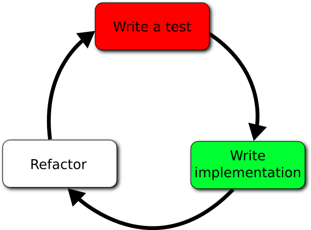
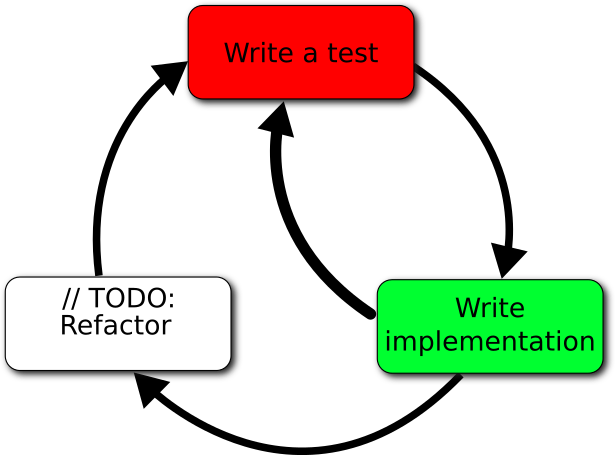
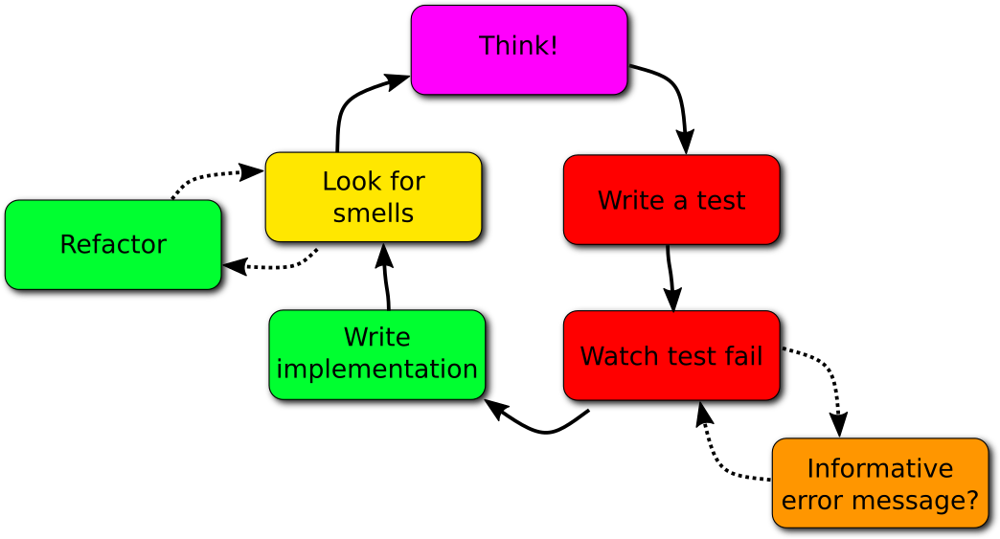

Effective TDD in Python
 Joe Schmetzer
Joe Schmetzer tumbarumba
tumbarumba @tumbarumba
@tumbarumba @tumbarumba@techhub.social
@tumbarumba@techhub.social
XP: eXtreme Programming
- Pair programming
- Test-Driven Development (TDD)
- Refactoring
- Simple Design

Test-Driven Development


TDD: Research
Developer Testing in The IDE: Patterns, Beliefs, And Behavior
—M. M. Beller, et al, Delft University of Technology
Less than 1 in 10 developers who claim to do TDD actually get anywhere close when observed doing their work
TDD: Better
Refactoring
- Make sure all the tests pass
- Make a small change to the design of the code that improves it
- Make sure all the tests still pass
Demonstration
https://github.com/canberra-code-dojo/fcis